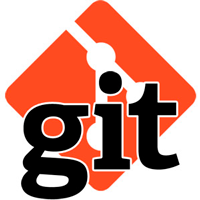
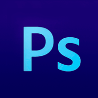
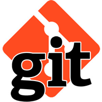
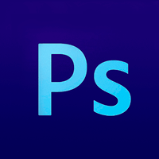

Personal details
Date of birth: April 15, 1989
Phone: +380661323437
Location: Kiev
E-mail: michael.voloshyn@gmail.com
Skype: mickey_vol
Date of birth: April 15, 1989
Phone: +380661323437
Location: Kiev
E-mail: michael.voloshyn@gmail.com
Skype: mickey_vol
Obtaining of long-term and stable job of frontend/web developer. Career development and achieving of professional growth in the field of frontend/web development
2016 – Course “I'm Frontend Developer” by UNDP
2015 – Course “Python Development for Beginners” in Web Academy
2010 – 2011 – Course of English. The studio of foreign languages “New Tone”
2008 – 2010 – Course of English. Specialized school of translators "Aquamarine"
2006 – 2011 – Volodymyr Dahl East Ukrainian National University. Specialty Electronic industry equipment". Master's degree with honors
June 2016 – present time
Front-End Developer
Vintage Web Production
May 2016 – June 2016
Junior Front-End Developer
Инвест Мастербуд
September 2014 – April 2016
Design engineer (design of equipment for production of polymeric materials and paper)
PE “PASTPROM”, Kiev
September 2011 – June 2014
Translator (English translation of technical documentation and correspondence)
SE CDBM “Donets”, Lugansk
September 2011 – June 2014
Design engineer (design of specialized technological equipment for growing of corundum single crystals)
SE CDBM “Donets”, Lugansk

 



<HTML5>
<semantic layout>
<valid code>
<svg>
</HTML5>
#CSS3 {
TwitterBootstrap: experience in use;
SASS(SCSS): experience in use;
BEM: experience in use;
Metronic: experience in use(development interface for warehouse accounting);
Adaptive-layout: using media query for different screen extension;
}
/* JavaScript */
var OOP = "understanding of principles";
var Patterns = "understanding of principles, using";
var clientJavaScript = ["DOMmodel", "eventHandling", "AJAXrequest", "stylesManagment"];
// JS Libraries
var JavaScript, Library, jQuery, react, angular;
JavaScript = function(name){
this.name = name;
};
JavaScript.prototype.strongSkills = function(){
return this.name + " : strong knowledge";
};
Library = function(name){
JavaScript.apply(this, arguments);
};
Library.prototype = Object.create(JavaScript.prototype);
Library.prototype.constructor = JavaScript;
Library.prototype.basicSkills = function(){
return this.name + " : basic knowledge (development of simple toDoList)";
};
jQuery = new Library("jQuery");
react = new Library("React.js");
angular = new Library("Angular.js");
console.log(jQuery.strongSkills()); // jQuery : strong knowledge
console.log(react.basicSkills()); // React.js : basic knowledge (development of simple toDoList)
console.log(angular.basicSkills()); // Angular.js : basic knowledge
Experience in use of such plugins:
jQuery.ui(autocomplete, selectable) - for different tasks
jQuery.tmpl - for rendering data objects or arrays into the HTML DOM
Slick.js, Swiper.js - for sliders
Select2.js - for custom select
Enquire.js - for media queries
Video.js - for styling video control panel
AOS.js - for animation when scrolling
Fullpage.js - for applications with fullpage blocks
Vivus.js, ProgressBar.js - for svg animate
Streaming build system Gulp : experience in use (including this project)
Module bundler Webpack : basic knowledge
Experience in use Tars which include Gulp and Webpack
Templating engines: Twig, Nunjucks, Handlebars
#Python
{"Python3" : "basic knowledge", "Django" : "experience in use", "Virtualenv" : "experience in use"}
Linux distribution (Ubuntu) : experience in use
Git : experience in use (for personal and team developing)
Adobe Phoshop, Adobe Avocode : use for layout
Perfect Pixel for checking markup layout
Radioaktivefilm - web application for famous video company
The used technologies:
jQuery
jQuery tmpl, jQuery autocomplete
Swiper.js
Video.js
History API
AJAX, REST API, JSON
Santehrai - layouts for internet-shop
EasyXpress - delivery service of goods from USA. I developed personal account for user
Mindguide layouts for education platform
Testing landing page for sale of bmwi8 in Ukraine
My frofile, where you can find source code of my projects and different test tasks
P.S. I didn't include such qualities as communicability, punctuality, calm nature and certainly my charisma because of it describes only my personal side, not a professional